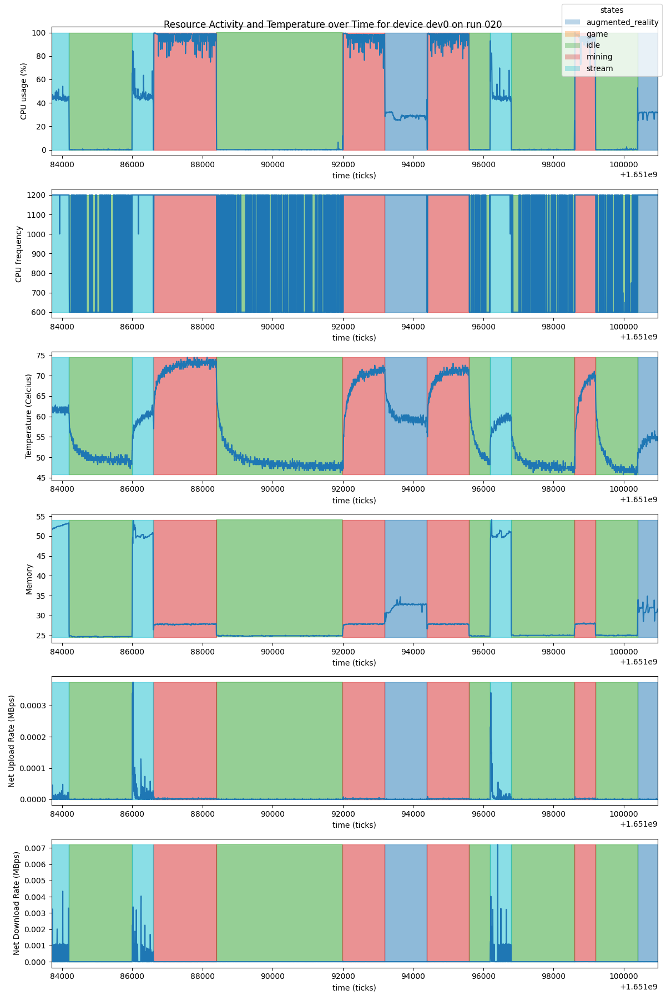
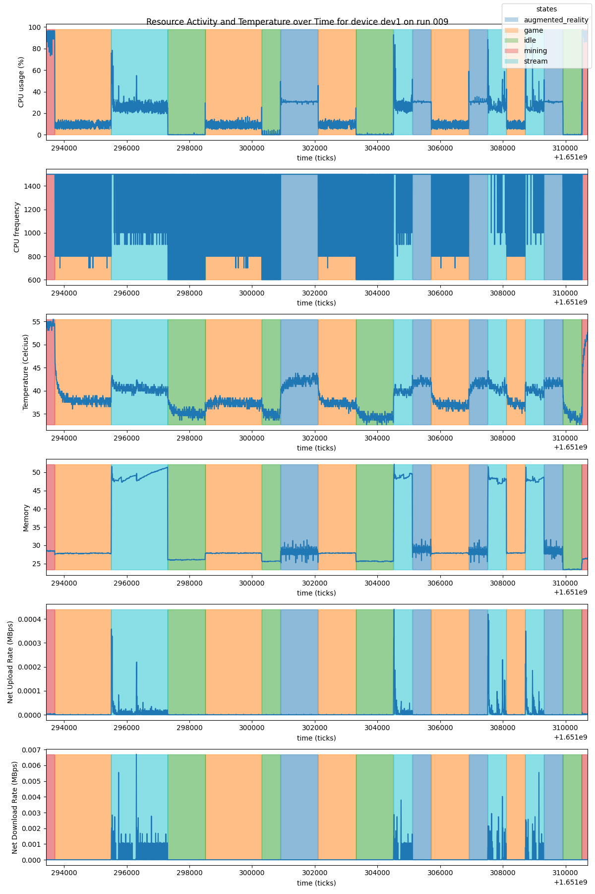
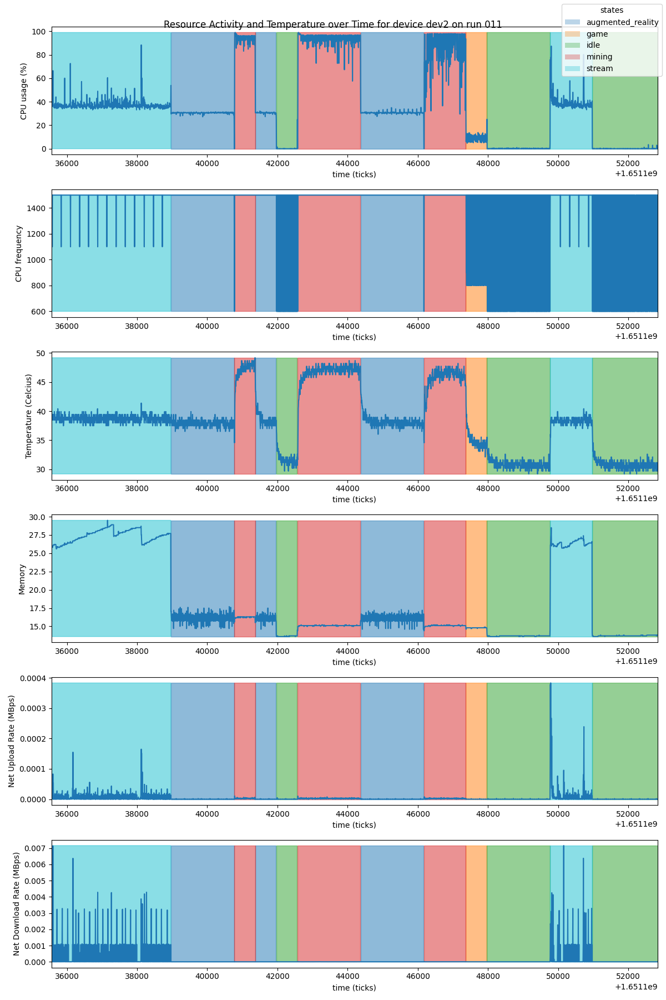
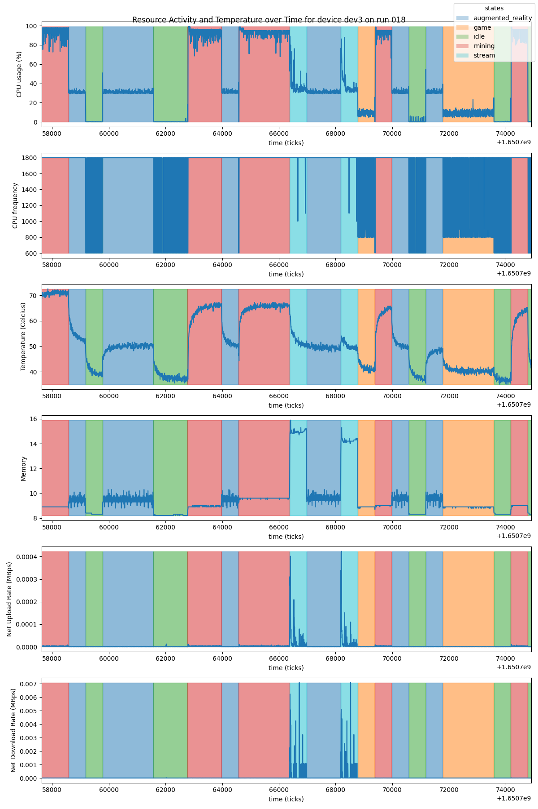
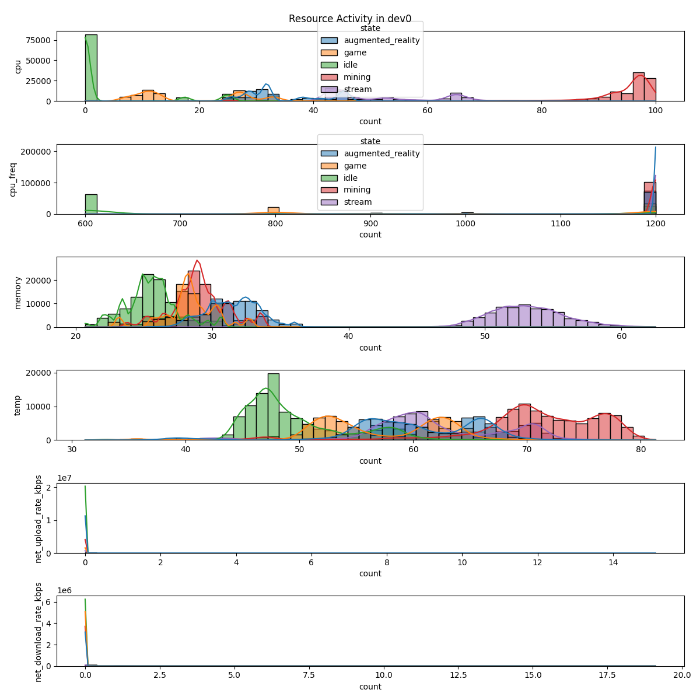
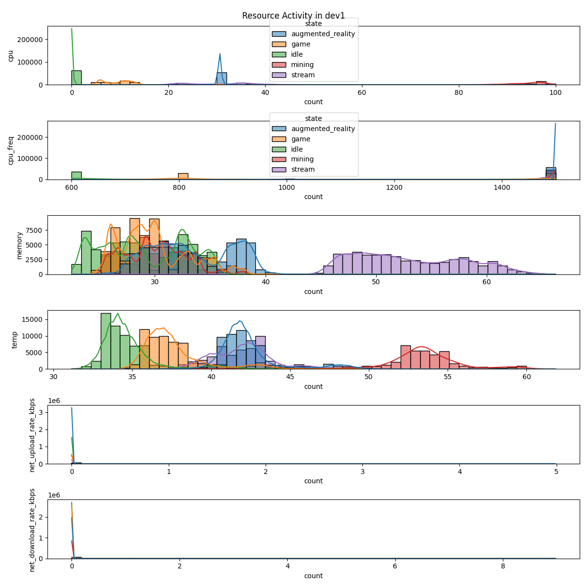
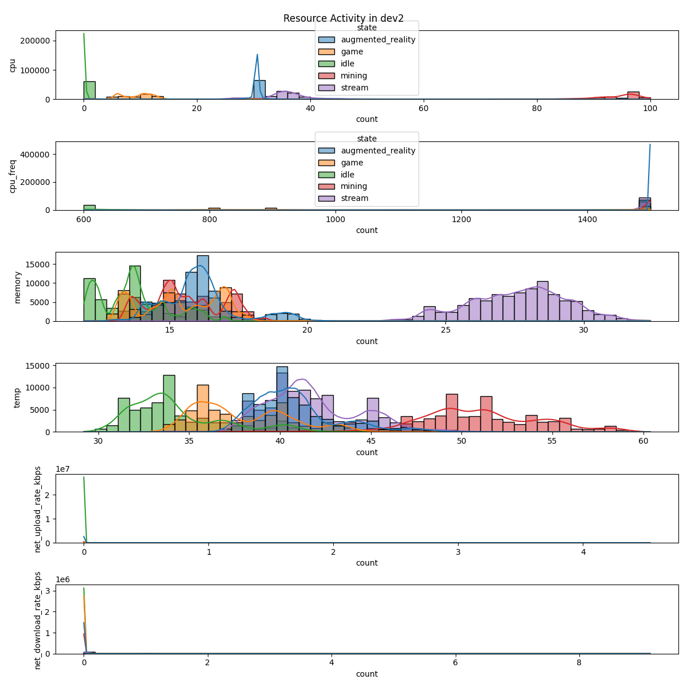
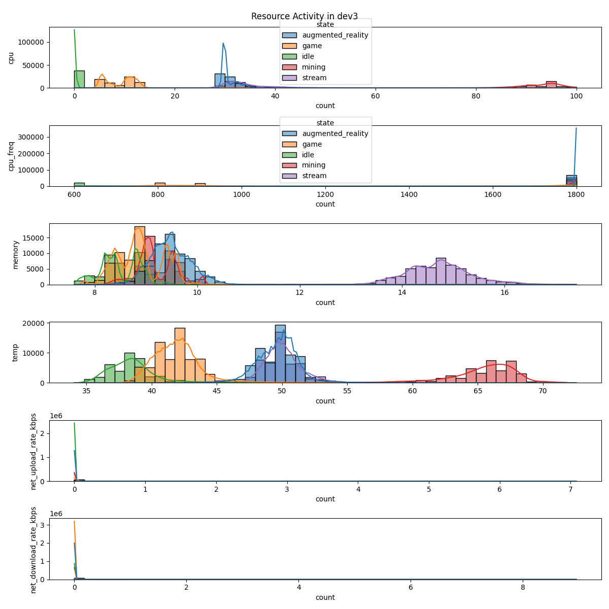
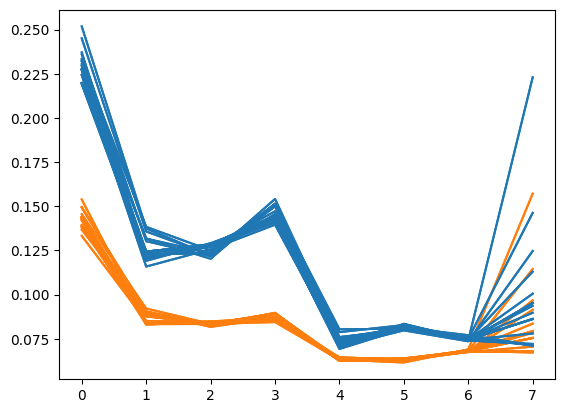

Analysis on the Relationship Between Resource Usage and Temperature on Raspberry Pi Devices#
Link to Github page: CuriousChum/jsc370
Introduction#
Background#
Edge computing devices such as Raspberry Pis have started gaining popularity due to their minimal design and affordable price tag. Unlike their bulkier counterpart, Raspberry Pis are small, yet powerful enough to act as a miniature personal computer (PC). This makes them suitable for specialized tasks such as gathering field data. However, due to their size and the rising demand in performance, the temperature within the device motherboard can rise quickly. The motherboard, being in the center of the device, is affected by the activity of peripheral devices and may wear out from intensive use.
This analysis aims explores the relationship between device resources utilization and temperature across different Raspberry Pi specifications. The goal is to understand how different workloads affect device temperature (as measured by sensors in the motherboard) and whether this relationship can be used to predict thermal behavior under various application usages and resource utilization. This information is valuable for optimizing edge computing applications by anticipating device wear out and CPU throttling due to overheating.
Research Question#
How does resource utilization affect device temperature across different Raspberry Pi configurations and application states, and can we identify patterns in this relationship to predict overall device temperature?
Methods#
Dataset Description#
The dataset used in this analysis was constructed and collected by researched is the Queen’s Telecommunation Research Lab (TRL), led by Ruslan Kain. It contains resource usage information from four heterogeneous Raspberry Pi 4 devices, with different RAM sizes (2GB, 4GB, 8GB) and CPU frequencies (1200MHz, 1500MHz, 1800MHz), measured under different application usages including gaming, streaming, augmented reality, mining, and idling. The data is collected in ~5 second intervals using the PsUtil Python package.
The dataset includes measurements from usages with random and periodic workloads using different Raspberry Pis. Each .tab file in the dataset contains data on a ‘run’ of a device. The tables are denoted as <device specification>_res_usage_data_*.tab. The runs included in this analysis are only from files that matches the following pattern: <device specification>_res_usage_data_rvp_*.tab.
Table 1 lists all the variables regarding to device resource information during each run of the Raspberry Pi 4s that is given in the dataset.
Variable Name |
Description |
|---|---|
|
System-wide CPU utilization as a percentage (%) |
|
System-wide CPU cycle frequency (MHz) |
|
Label feature for the resource-usage state of the device associated with the running application |
|
Memory currently in use or very recently used, as a percentage of RAM (%) |
|
Number of bytes sent in the last time interval, divided by the time interval (MBytes/s) |
|
Number of bytes received in the last time interval, divided by the time interval (MBytes/s) |
|
Device temperature (°C) |
Data Wrangling#
The dataset contains a lot of columns, some of which are redundant, filled with only zeros, or describes irrelevant information; these columns will thus be dropped from the analysis.
First, columns describing CPU time spent will be dropped since the focus is mainly on overall CPU utilization, so cpu and cpu_freq is sufficient. Manual inspection of the data shows that the columns gpu and gpu_memory are always zero, implying that the builtin GPU is not utilized in any of the workloads, so it is drop. Furthermore, the columns link_quality_max and link_quality are dropped because of the lack of documentation; the exact descriptions cannot be found in the PsUtil package. Finally, the columns wifi_freq, net_sent, and net_recv are dropped because these are already better represented by net_upload_rate and net_download_rate; note that wifi_freq is not indicative of device resource usage and both net_* features are cumulative sums of the net_*_rates, respectively.
Next, the tables from the dataset will be combined while preserving per-device and per-run information using the columns pi_id and run_id, respectively. For brevity, the devices will be denoted as follows
dev0: Raspberry Pi 4, 2GB RAM, 1200 MHzdev1: Raspberry Pi 4, 2GB RAM, 1500 MHzdev2: Raspberry Pi 4, 4GB RAM, 1500 MHzdev3: Raspberry Pi 4, 8GB RAM, 1800 MHz
Meanwhile, run_id ranges from 000 to 018, each table in the initial dataset is considered a different run, irrespective of the device.
The final pruned dataset contains columns that is described in Table 2.
Variable Name |
Description |
|---|---|
|
System-wide CPU utilization as a percentage (%) |
|
System-wide CPU cycle frequency (MHz) |
|
Label feature for the resource-usage state of the device associated with the running application |
|
Memory currently in use or very recently used, as a percentage of RAM (%) |
|
Number of bytes sent in the last time interval, divided by the time interval (MBytes/s) |
|
Number of bytes received in the last time interval, divided by the time interval (MBytes/s) |
|
Device temperature (°C) |
|
Device id, one of |
|
Run id, ranges from |
---------------------------------------------------------------------------
ModuleNotFoundError Traceback (most recent call last)
Cell In[1], line 7
4 import matplotlib.pyplot as plt
5 import seaborn as sns
----> 7 import statsmodels.formula.api as smf
9 from scipy.stats import chi2
10 from sklearn.model_selection import TimeSeriesSplit
ModuleNotFoundError: No module named 'statsmodels'
Exploratory Data Analysis#
Since each run is a time-series data, comparing each feature directly might not be ideal. Instead, the comparison will either be done over time, or on the differences.
Comparison over Time#
Since it’s infeasible to visualize and compare all runs with more than 30,000 observations, we instead sample one run from different devices and look at random sections within it. fig-time0, fig-time1, fig-time2, fig-time3 are sections of runs that are chosen uniformly at random for each device.




The plots shows several notable things: device temperature tends to move to a certain semi-constant value on each state but with a noticable jitter. Similarly, CPU usage tends to move to a constant value with noticable jitters and occasional spikes every state. CPU frequency, on the other hand, appears to erratically jump from high to low, this is a phenomenon called throttling, where the CPU dynamically changes its frequency due to some circumstance, either due to low usage (as to preserve energy), or due to overheating, which is not seen here. Finally, we observe that there is only network activity when the device is streaming. Finally, memory usage is consistent within states with a more noticable variation when the device is streaming or running an augmented reality application.
Comparison per Device per State#
Then, we visualize the distribution of features per device colored by state. The following figures shows the aggregated distribution over all runs. Network upload/download rates are scaled up to the scale of KBps in this visualization due to be more noticable.




There are notable patterns in the distribution of each state: temperature and CPU usage is approximately unimodal for each state; CPU frequency in each state are either maximum or a specific value with not much in between; memory usage being quite consistent with similar centers, albeit having different spread/variance between device; network is activity is dominantly zero.
Feature Engineering#
Motivated by findings in the EDA phase, we will create the following columns as a means to transform the original features:
cpu_freq_mean: the average CPU frequency within a period of a state in each run per device. Since the CPU throttles to save power on low intensity tasks, it will produce less heat as a consequence; however, depending on how long it runs on the higher or lower frequency, the thermal contribution may vary.cpu_ma: a moving average CPU utilization. The CPU measurements might contain a lot of noise due since the method of measuring CPU utilization is usually sampling. Taking the moving average helps reduce noise in our data. The window chosen for this is 4 lags. The reasoning is that too much lag will exacerbate the effect of jumps in CPU activity, oversmoothing it.temp_ma: a moving average device temperature. Similar to CPU usage, temperature measurements might not be very accurate. The window chosen is 4 lags as well, with the same reasoning to prevent oversmoothing.
Network activity metrics used will be the one in KBps, since their value are extremely small.
Modelling#
In this phase, we will attempt to build a model that can predict device temperature under specific workloads. Due to our data being highly structured, we can expect to have accurate models at the expense of generalization; our models will be good at predicting temperature under similar workloads, but might be very inaccurate for workloads that are dissimilar to these usages.
Furthermore, the model will be trained to predict the temperature moving average, this is to reduce the noise that is learned by the model that might lead to overfitting.
Feature Analysis#
To begin, we perform some analysis to reduce the number of features in hopes of improving model generalizations. The first feature we examine is pi_id. We wish to check whether there are meaningful differences between the different configurations in CPU frequency and RAM size. To do this, we perform a likelihood ratio test between a linear mixed model that uses pi_id and one that doesn’t.
The likelihood ratio test indicates that indeed there is a difference between devices, so this feature will be kept.
/home/tanloui2/courses/jsc370/.venv/lib/python3.11/site-packages/statsmodels/regression/mixed_linear_model.py:2237: ConvergenceWarning: The MLE may be on the boundary of the parameter space.
warnings.warn(msg, ConvergenceWarning)
LR = 135.40, df = 3, p = 0.0000
Model Selection#
fig, ax = plt.subplots()
for mse_ in mse_whole:
ax.plot(mse_, c="tab:orange")
for mse_ in mse_part:
ax.plot(mse_, c="tab:blue")

Summary#
We see that there is stark difference in CPU and memory usage for each state with each state utilizing around the same percentage of CPU utilization for each of their usage window. However, the utilization percentage for each state is similar across devices. We also observe CPU throttling in cpu_freq, where the CPU scales down its frequency to conserve power usage when running processes with lower utilization.
Furthermore, the temperature seems to increase/decrease quickly when the CPU utilization changes rapidly due to change of device application state, and plateauing to a stable temperature that is consistent for each state. This might imply that the device temperature change has some relationship to CPU utilization.